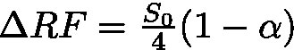

Last updated 6 March 2011
This page is for climate models participating in GeoMIP that would like to conduct Experiment G3solar. We provide an excel file (courtesy of Simone Tilmes and Mike Mills) specifying mid-year radiative forcing for RCP4.5. The particular column of interest is Column 4 (TOTAL_ANTHRO_RF).
Instructions for using these data can be found in the additional specifications document. We also repeat the instructions here:

for each year.